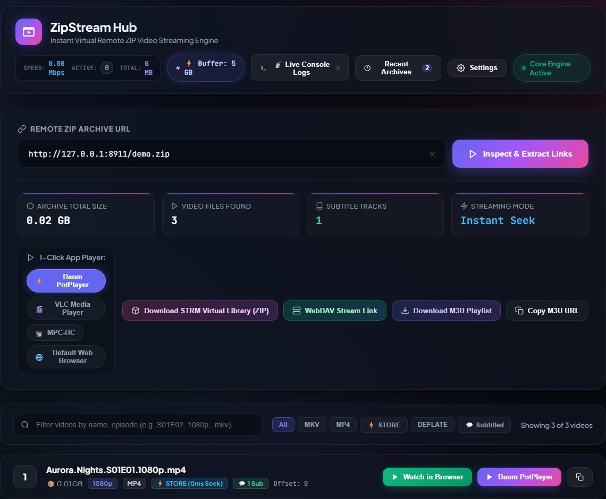
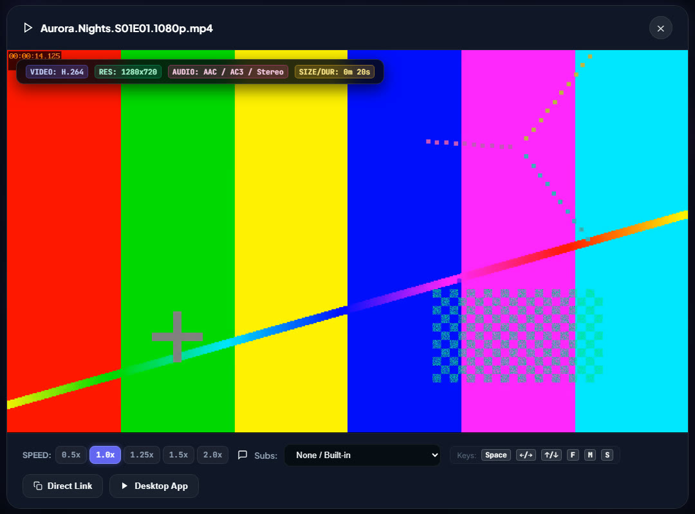

Zero-download streaming
Streams media directly from remote HTTP/HTTPS ZIP archives over standard HTTP 206 byte-range requests.
ZipStreamHub is a zero-download streaming server for remote ZIP and ZIP64 archives. It reads the ZIP index with HTTP range requests and serves seekable HTTP 206 streams to PotPlayer, MPV, VLC, IINA, your browser, M3U playlists, WebDAV and media servers.
$git clone https://github.com/MHJoy99/ZipStream-Hub.gitRange request shifted by the entry's data offset.Figures are as stated in the project README, not independently measured here.
Key features
Ten capabilities straight from the README, from the byte-range engine to one-click player launch, playlists and a dark-mode dashboard.
Streams media directly from remote HTTP/HTTPS ZIP archives over standard HTTP 206 byte-range requests.
Handles archives larger than 4 GB (up to 16 exabytes by the ZIP64 format) with STORE and DEFLATE methods.
Multi-threaded read-ahead buffer with 128 KB chunk slicing for smooth playback and fast seeks. Size is tunable up to 5 GB of RAM.
Auto-detects PotPlayer, MPV, VLC, MPC-HC, MPC-BE and IINA via the Windows Registry and your system PATH.
Dark-mode control panel with a built-in HTML5 player, fullscreen, playback speed and live stream telemetry.
Export a playlist of every video in the archive for Kodi, Infuse (Apple TV and iOS) and VLC.
Detects subtitle tracks and converts .srt to WebVTT on the fly for in-browser viewing.
Quick-access storage for frequently inspected archives, with one-click reload and saved seek positions.
Background startup via launch_zipstream.vbs, desktop shortcuts and automatic browser launch.
A colourful ANSI CLI (zipstream) for keyboard-driven episode selection or direct launch into a player.
How it works
A ZIP is built for random access. So ZipStreamHub never needs the whole archive: it reads the tail, builds an index in memory, then turns every player seek into one precise range request.
Request the final 1 MB with an HTTP Range request. Locate the End of Central Directory (0x06054b50) and the ZIP64 Locator (0x07064b50).
Read the file headers (0x02014b50) and build the in-memory archive index. The README states this takes about 0.6 seconds.
A player request for bytes [S, E] is offset against the file's data_offset and served through the asynchronous sliding-window prefetcher.
0x04034b500x02014b500x06064b500x07064b500x06054b50Schematic, not to scale. The highlight sweeps in the order ZipStreamHub reads: tail first, then the index, then only the file data you play.
The Central Directory points to the local file header, so ZipStreamHub reads those 30 bytes once and caches the real payload offset. With the STORE method, byte X of the video is byte data_offset + X of the remote file.
# per entry (cached after the first lookup) data_offset = local_header_offset + 30 + name_len + extra_len # player asks for [S_client, E_client] S_remote = data_offset + S_client E_remote = data_offset + E_client
STORE (method 0, no compression) gives 1:1 byte offsets and instant seeking. DEFLATE (method 8) compresses the data, so, per the troubleshooting guide, seeking to an arbitrary byte can stutter or fail.
Videos are already compressed, so a Store ZIP is about the same size. To re-pack with 7-Zip:
# 0% compression = instant streaming
7z a -mx0 output.zip "path/to/videos/*"
Architecture
One engine reads the remote archive; one multi-threaded server exposes it as streams, playlists, WebDAV and STRM bundles. No FUSE or kernel driver involved.
Any HTTP/HTTPS direct link that honours Range. Only the tail, the index and the played ranges are read.
Probes size with Range: bytes=0-0, tail-parses EOCD / ZIP64, builds the index, caches each data_offset.
Worker thread pulls 2 MB blocks over a keep-alive urllib3 pool into a bounded queue; the consumer slices them into 128 KB writes.
Answers 206 Partial Content at /stream/<id>/<filename>, plus the REST API, M3U, STRM and WebDAV.
Data is buffered ahead of the player in RAM only. When the buffer is full, upstream fetching pauses (backpressure). On a seek the socket closes, an abort event stops the worker, queued blocks are drained, and prefetching restarts at the new offset.
prefetched in RAMplayback cursornot fetched
Set ZIPSTREAM_PREFETCH_MB (README presets):
| System | Value | Forward buffer |
|---|---|---|
| 4 GB RAM (Raspberry Pi, small VPS) | 64 | ~30-60 sec |
| 8-16 GB RAM (desktop, laptop) | 1024 | ~2-5 min |
| 32 GB+ and gigabit fiber | 5120 | ~10-25 min |
ZIP/ZIP64 tail parser, RemoteZipReader, StreamPrefetcher and stream metrics.
Threaded HTTP server on port 8787 with CORS, the REST API and the web GUI at /.
Detects installed players (Windows Registry and PATH) and launches them with the stream URL.
An #EXTM3U playlist of the archive's video entries, each pointing at a /stream/ URL.
RFC 4918 virtual filesystem at /webdav/ for Infuse, Kodi and Windows Explorer.
Virtual .strm library ZIPs so Jellyfin, Emby and Kodi can index the archive.
Dashboard, settings, history, live console and an HTML5 player with a codec/resolution badge.
.srt to WebVTT on the fly, plus binary media-header inspection (codecs, size, duration).
SQLite history and bookmarks, JSON/env configuration, and the interactive terminal player.
Web GUI
Open http://127.0.0.1:8787, paste a direct ZIP URL and the dashboard lists every video with its compression method and offset. Play it in the browser or send it to your desktop player.

STORE (0ms Seek) and its offset.
Players and export
Every file in an inspected archive gets a stable stream URL: http://<host>:<port>/stream/<entry_id>/<url_encoded_filename>. Anything that can open an HTTP URL can play it.
#EXTM3U #EXT-X-VERSION:3 # PLAYLIST GENERATED BY ZIPSTREAM HUB (2 items) #EXTINF:-1 tvg-name="Episode 01 - Pilot.mkv" group-title="ZipStream Hub",Episode 01 - Pilot.mkv http://127.0.0.1:8787/stream/1/Episode%2001%20-%20Pilot.mkv #EXTINF:-1 tvg-name="Episode 02 - The Journey.mkv" group-title="ZipStream Hub",Episode 02 - The Journey.mkv http://127.0.0.1:8787/stream/2/Episode%2002%20-%20The%20Journey.mkv
Drop the file into a player, or serve the URL to IPTV-style apps. From the CLI: --export-m3u and --export-strm.
The WebDAV bridge at http://127.0.0.1:8787/webdav/ answers PROPFIND, GET, HEAD and OPTIONS, so the archive can be mounted as a network drive in Windows Explorer and used as a source in Infuse and Kodi, with transparent range streaming.
The /api/strm.zip endpoint generates a bundle of tiny .strm files (each holds one stream URL). Jellyfin, Emby and Kodi then scrape and play the videos from the remote archive with no video stored locally.
Subtitles: .srt tracks found in the archive are converted to WebVTT on the fly via /api/subtitle.
Quick start
Requires Python 3.9 or newer. A desktop player such as PotPlayer, MPV or VLC is optional (the browser player is built in).
git clone https://github.com/MHJoy99/ZipStream-Hub.git cd ZipStream-Hub pip install -e . # or for development: # pip install -e ".[dev]"
zipstream-server
# or
python server.pyOpen http://127.0.0.1:8787. On Windows you can also double-click launch_zipstream.vbs.
# Interactive episode browser zipstream "https://example.com/anime_season1.zip" # Non-interactive direct launch into PotPlayer zipstream "https://example.com/anime_season1.zip" --ep 1 --player potplayer
docker compose up -d
Tip: for instant seeking, the video ZIP must be packed with Store (no compression). See "Store vs. Deflate" above.
Configuration and API
Precedence is Environment variables > config.json > defaults. Everything is also editable from the Settings modal in the web UI.
.env.example)# high-speed 5 GB buffering on 32 GB+ RAM systems
export ZIPSTREAM_PREFETCH_MB=5120
export ZIPSTREAM_SLICE_KB=128
export ZIPSTREAM_HOST=0.0.0.0
export ZIPSTREAM_PORT=8787
export ZIPSTREAM_DEFAULT_PLAYER=potplayer{
"server": { "host": "0.0.0.0", "port": 8787, "debug": false },
"streaming": { "prefetch_buffer_size_mb": 1024, "slice_size_kb": 128,
"max_concurrent_streams": 8, "chunk_timeout_seconds": 30 },
"players": { "default_player": "potplayer" },
"ui": { "theme": "dark", "accent_color": "#3b82f6", "page_size": 50 }
}Excerpt of the README example. Port conflict? Run python server.py --port 9090.
| Method | Endpoint | What it does |
|---|---|---|
| POST | /api/inspect | Inspect a remote ZIP URL, return the archive structure as JSON |
| GET | /stream/<id>/<file> | HTTP 206 byte-range stream |
| HEAD | /stream/<id>/<file> | Content-Length and MIME type |
| GET | /api/playlist.m3u | Export an #EXTM3U playlist |
| GET | /api/strm.zip | Virtual .strm library bundle |
| GET | /api/subtitle | Subtitle to WebVTT on the fly |
| GET | /api/media_inspect | Codec, size and duration from media headers |
| GET | /api/stats | Bitrate, active streams, buffer, latency |
| POST | /api/play | Launch the host media player with a stream URL |
| PROPFIND | /webdav/ | RFC 4918 directory tree for Infuse, Kodi, Explorer |
More endpoints (config, history, players) are in docs/API.md.
FAQ
ZipStreamHub is an open-source streaming server and virtual archive extractor for remote ZIP and ZIP64 files. It lets media players such as PotPlayer, MPV, VLC and IINA, or a web browser, play and seek through video stored inside a ZIP archive on a web server, without downloading or unpacking the archive first.
A ZIP keeps its index (the Central Directory) at the end of the file. ZipStreamHub uses HTTP Range requests to read only the last 1 MB, finds the End of Central Directory record and the ZIP64 locator, then reads the Central Directory to build an in-memory index. When a player asks for a byte range of a video, ZipStreamHub adds the entry's data offset and fetches just that range from the remote server, so only the parts you watch cross the network.
With the STORE method (method 0, no compression) byte X of the video corresponds 1:1 to byte data_offset + X in the ZIP, so a seek is a simple offset calculation. With DEFLATE the data is compressed, and the project's troubleshooting guide says seeking to an arbitrary byte can stutter or fail. Re-pack the archive with Store, for example 7z a -mx0 output.zip with your videos, and seeking becomes instant. Video files are usually already compressed, so a Store ZIP is about the same size.
No video data is written to disk. Streamed data passes through an in-memory sliding-window prefetch buffer (StreamPrefetcher) whose size you set with ZIPSTREAM_PREFETCH_MB. When you seek or stop, the old buffer is drained. The app does keep small local files of its own, such as config.json and an SQLite database for archive history and bookmarks.
The URL must be a direct link to the ZIP file, and the server or CDN must honour HTTP Range requests (it must answer with 206 Partial Content and Accept-Ranges: bytes). HTML landing pages, confirmation pages and servers without Range support will fail with errors such as "Valid ZIP End of Central Directory record not found" or "Server does not support Range requests".
It auto-detects and launches PotPlayer, MPV, VLC, MPC-HC, MPC-BE and IINA, and it has a built-in HTML5 browser player. Any app that can open an HTTP URL works with the /stream endpoint. Playlists exported as M3U/M3U8 work in players such as Kodi, Infuse and VLC, the WebDAV bridge serves Infuse, Kodi and Windows Explorer, and STRM bundles let Jellyfin, Emby and Kodi index the archive as a virtual library.
You need Python 3.9 or newer. Clone https://github.com/MHJoy99/ZipStream-Hub.git, run pip install -e . inside the folder, then start the server with zipstream-server (or python server.py) and open http://127.0.0.1:8787. From the terminal you can also run zipstream followed by the ZIP URL, or start it with docker compose up -d.
Set ZIPSTREAM_PREFETCH_MB. The README suggests 64 MB for 4 GB RAM systems (about 30 to 60 seconds of forward buffer), 1024 MB for 8 to 16 GB systems, and 5120 MB for 32 GB and gigabit-fiber machines. The precedence is environment variables, then config.json, then defaults.
Yes. It is free and released under the MIT License. It is a Python 3.9+ package with urllib3 as its only dependency, and it runs on Windows, macOS and Linux, or as a Docker container. Use it only with archives you are entitled to access and respect the terms of the hosts and services involved.
Use responsibly. ZipStreamHub is a neutral streaming tool. Only stream archives you have the right to access, and respect the terms of service and rate limits of the hosts and CDNs you connect to.
More by MHJoy99
Also: camscanner-mcp-hd-scanner · speedy-bonding · jellyfin-torbox-potplayer-stack · codex-vscode-health · Rainmeter-Todo-Skin · GitHub profile